SignlinkCMS is an on-line content management system developed specifically for users of sign languages (e.g., American Sign Language - ASL, Langue des signes québécoise -LSQ, British Sign Language - BSL).
SignlinkCMS supports sign language-based web pages that are produced by Signlink Studio v2.0 (a free authoring tool that is available from www.signlinkstudio.com), videos, images and text.
In SignlinkCMS, icons and other visual cues are used to convey information to the website members instead of using text. This creates an immersive sign language based experience for website members.
SignlinkCMS features the ability to create and manage pages, forums and vlogs (short for video blogging).

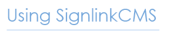
2.1. System Requirements
Web browser:
- Internet Explorer, version 6.0+
- FireFox, version 3.0+
Quicktime player:
- Quicktime plugin
Flash player
- Flash plugin
2.2. Getting Started
SignlinkCMS is a web application that allows sign language users to participate in and view online web pages, discussions and blogs using sign language instead of text.You can use SignlinkCMS by entering a web address (e.g. http://www.signlinkstudio.com/Canadian_Deaf_Academics_SignlinkCMS/) into your browser. If you are not sure of the web address, please contact your SignlinkCMS administrator.
When you go to the SignlinkCMS home page, you will probably see something similar to the web page shown in Figure 1. The home page consists of several parts: a navigation bar, the login area and the content area. The content area usually consists of three sections: pages, forums and vlogs.
Figure 1: SignlinkCMS home page
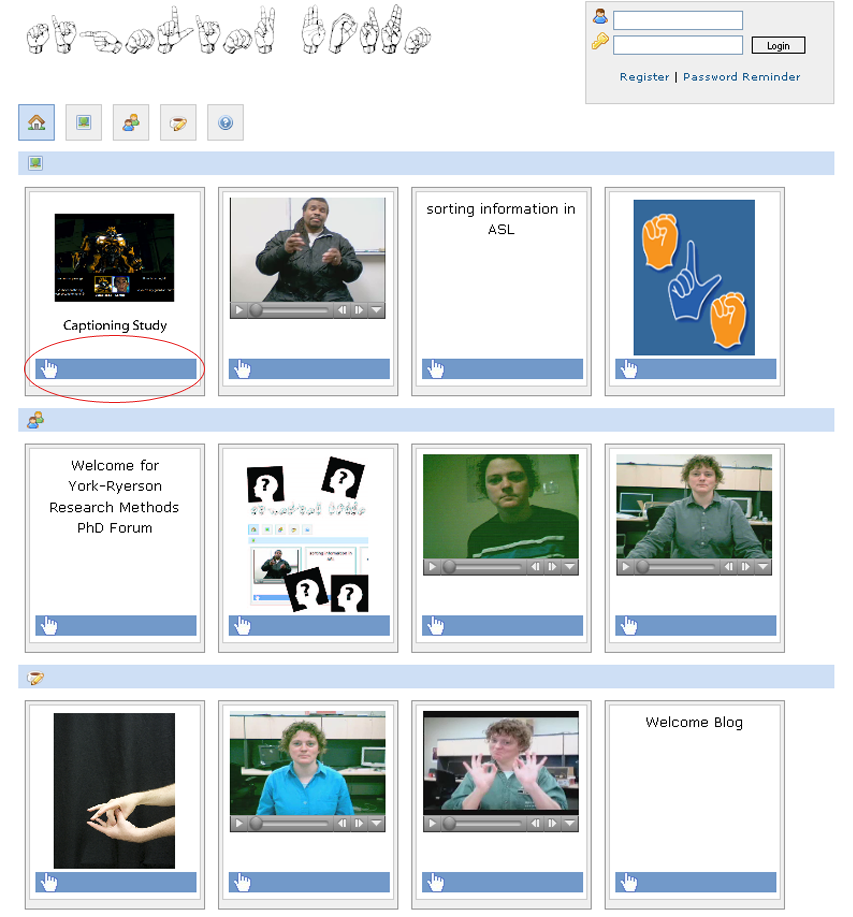2.2.1. Viewing web pages in SignlinkCMS
You can view web pages in SignlinkCMS by clicking on the blue bars. For instance, to view a forum, click the blue bar below the forum title (Figure 2). Note that unlike on a traditional text-based web site, titles can be video, images or text.When you click on the blue bar you are taken to another web page where you can view more pages by clicking on more blue bars. Some pages will contain only images and text, but many will contain videos or signing web pages. Take a moment to familiarize yourself with SignlinkCMS by clicking on some blue bars and viewing some web pages. You can return to the home page by clicking the home icon (see 2.3.1).
Figure 2: View web pages by clicking on the blue bar
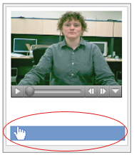As noted above, SignlinkCMS allows you to view signed web pages. These are web pages created by using a web page editor called Signlink Studio (available at www.signlinkstudio.com/). You can find out more about viewing signed web pages in section 3 of this manual.
2.3. The Navigation Bar
The home page of SignlinkCMS contains a navigation bar (Figure 3) using visual cues such as icons, that allows you to quickly access the various areas of the site.Figure 3: Navigation bar
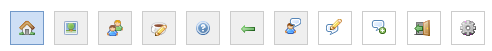2.3.1. Home
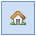
This is the first page that you will see when you arrive at a SignlinkCMS site (see Figure 1). The home page includes links to pages, forums and vlogs as well as a login area. The home page also includes a content section that shows a selection of pages, forums and vlogs to demonstrate what is available on the site.
2.3.2. Content Pages
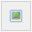
The “pages” section of the website contains web pages that have been added by the web site administrator. Pages may include information such as a welcome page, instructions for new members, etc. For more information see section 2.5.1.
2.3.3. Forums
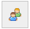
The Forums section of the web site allows you to visit and participate in the various forums on the system. For more information see section 2.5.2..
2.3.4. Vlogs
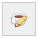
The Vlogs section allows you to visit the various vlogs on the web site. For more information see section 2.5.3..
2.3.5. Help
Click on help to view this manual online (available in sign language and in text).
2.4. The Login Area
Figure 4 shows the login area. It is not necessary to log in to view the web site, but you need to log in if you want to post in forums, reply to messages or make comments and to start your own vlog.
2.4.1. Registering
You must register on the site to log in. To register, select “register” in the login area (Figure 4).
Figure 4: The login area
The registration page (Figure 5) collects your name and email address (this is needed in case you forget your password) and lets you set your login name and password. The password you choose must be greater than eight characters and use a combination of letters and numbers. You must also choose a unique login name and email address.
Figure 5: The registration page
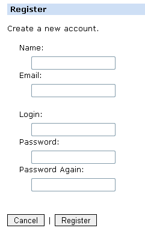Once you have registered and logged in, the login area will change to show your login name and a blank avatar picture (Figure 6). Two icons will also appear: a “preferences” icon and a “log out” icon.
Figure 6: The login area after logging in
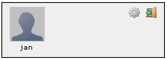Below the “new forum” link, you will see a list of the forums on your site. Each forum listing shows the forum title, the number of topics in the forum, the number of posts in the forum, the date and time of the last post and links to “posts”, “edit” and “delete”.
2.4.2. Preferences
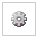
To edit your account, select the “preferences” icon in the login area.
This will display a screen that lets you change your name, your email, and your avatar image (Figure 7). Press “Submit” to save your changes.
Figure 7: Preferences
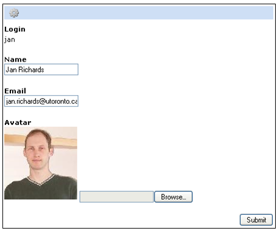Once you have set your avatar image, the login area will include that image (Figure 8).
Figure 8: The login area with an avatar image
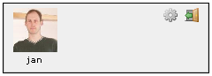2.4.3. Logging out
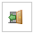
Click the log out icon to log out of the website.
2.4.4. Password reminder
Enter your email address and your login details will be emailed to you.
2.5. The Content Area
Navigating through the web site pages, forums and vlogs is briefly described in section 2.2 and is described more fully in section 2.5.2. Before proceeding, you may also wish to read about how to use signed web pages in section 3.2.5.1. Pages
The web site administrator creates pages for members to view. For example, the administrator might use a page to welcome people to SignlinkCMS or to explain the procedure for applying for a vlogging account.
2.5.2. Forums
A forum is an online discussion. The SignlinkCMS web site administrator is the only one who can create forums but everyone can view forum discussions. If you log in you can also create new discussion topics and submit new posts.
When you click the forum icon in the navigation bar you will see one or more forum boxes. Each forum box (Figure 9) displays a title (i.e., the video, image or text). At the bottom left of the forum box is an envelope icon that indicates new messages ( red icon) and viewed messages (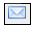 blue icon). In addition, you can see how many posts and topics are in the forum.
Figure 9: A forum box
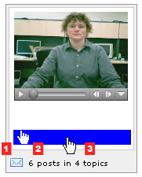
Entering a forum
To enter a forum, click on the blue bar that appears below the forum title (i.e., the video, image or text). When you enter the forum you will see the title of the forum at the top, and below that a series of topic boxes, showing the topics in the forum (Figure 10).
Figure 10: List of topics in a forum

Viewing a topic and message
Each topic box (Figure 11) shows the topic title. Below the blue bar several other pieces of information are displayed:
- 1: An envelope icon that indicates if there are new messages (red icon) or viewed messages (blue icon).
- 2: The number of replies

- 3: The number of views

- 4: The time and date of the last message.
Figure 11: A topic box
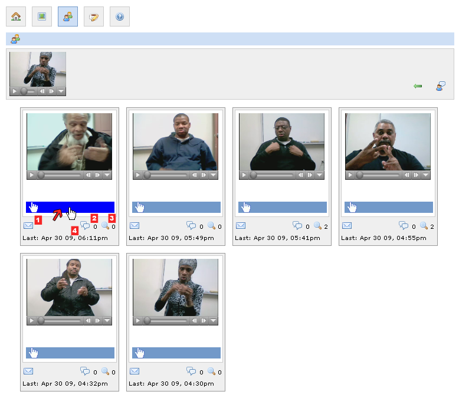
To view a topic, click on the blue bar. The web page for the topic (Figure 12) lists the forum title. To the far right of the forum title is an arrow icon allows you to return the forum page 
Below the forum title is the topic title and post. Note that just like titles, a forum post can be a signed web page, a video message or a text message. Below the topic post is a list of replies to the post.
Figure 11b: Signed web page, video message or a text message
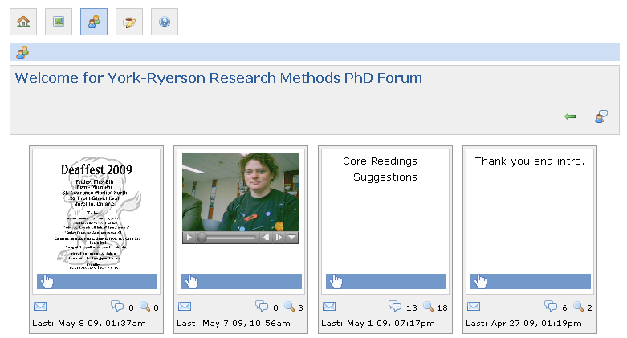Figure 12: A forum post and replies
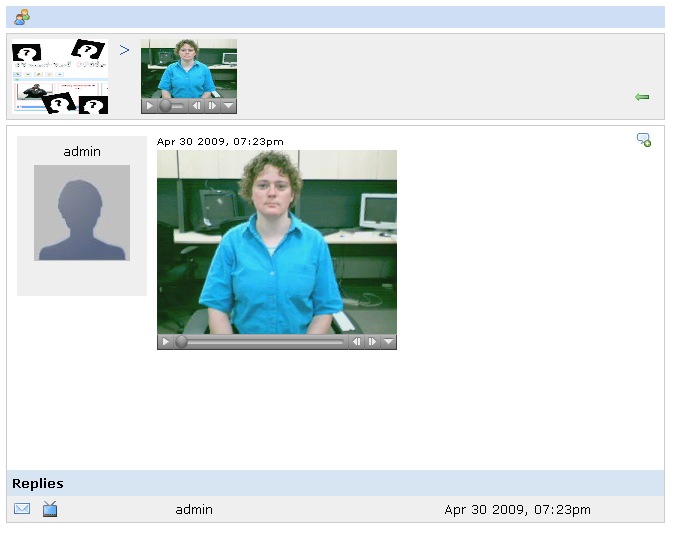
Viewing a topic and message
Each reply consists of four elements:
- 1: The envelope icon indicates a new message (red icon) or viewed message (blue icon).
- 2: The reply icon which can be clicked to view the reply. The icon indicates if the reply is a signed web page
 , a video
, a video  , or plain text.
, or plain text. - 3: The login name of the author.
- 4: The date and time of the reply.
Starting a new topic
To start a new topic, select the “new topic” button  on the far right of the main forum page (Figure 13).
on the far right of the main forum page (Figure 13).
Figure 13: The new topic icon on the far right
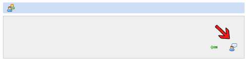Doing this will take you to a new page where you will specify a subject and a message to begin the new topic (Figure 14).
Figure 14: Creating a new forum topic

For the subject, choose an image, a video or text. For the message, choose between a signed web page (requires a swf file and an mp4 file), a video or text. Once you have decided what content types to use, you will be prompted for their locations on your computer. Enter “alt text” to have text appear when members hover over your image or video. Choose submit to finish creating the topic page (Figure 15).
Figure 15: Choosing content types

For more information on creating signed web pages see www.signlinkstudio.com.
Replying to a post
Replying to a post is very similar to creating a new topic, except a subject is not required.  and select the reply content type as before (Figure 16). Once you have specified your reply, press “submit”.
and select the reply content type as before (Figure 16). Once you have specified your reply, press “submit”.
Figure 16: The reply button

Figure 17: Replying to a post

Editing a post
Editing a post is similar to creating a post and replying to a post. When you are logged in and viewing a post which you submitted, you will see an edit button  on the far right. Clicking this button will allow you to change your post.
on the far right. Clicking this button will allow you to change your post.
Figure 18: Click the edit button on the far left to edit your post
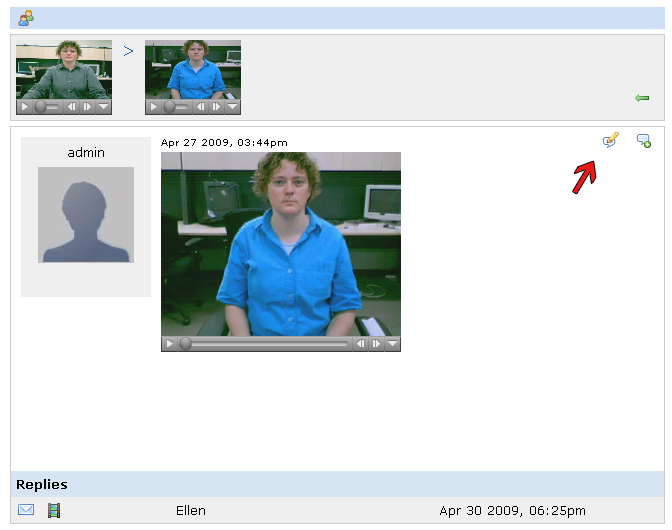2.5.3. Vlogs
The vlogs is an area in which only members who have been specifically provided with a vlog by the administrator can post entries. Other members may comment on those entries.
In all other respects, the vlogs work the same way as the forums.

Signed web pages are specially designed web pages for sign language users. They allow you to post and view material on the internet entirely in sign language or in sign language with captions and/or text. To create a signed web page, you need to use Signlink Studio, a web page editor available at www.signlinkstudio.com.
Using the Signlink technique, videos of people signing can be linked to any other information on the web. You can see an example in Figure 19.
Figure 19: A signed web page
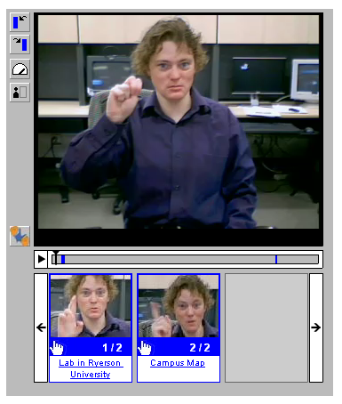A signed web page is built around a video of a person signing. When the signer identifies a concept that the web page author has linked to another web page, a signlink appears. Signlinks are similar to text hyperlinks on a text web page – you can click on a link to go to somewhere else on the web. A signlink is identified by a red outline around the video. On a signed web page, several features supplement the video:
Figure 19b: Link Timeline
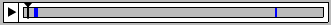The link timeline lets you quickly see the number and location of signlinks in the video. A link is highlighted when its signlink plays in the video. Clicking on any of the blue links plays the video from the start of that signlink.
Figure 19c: Thumbnail Images
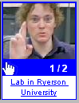Each thumbnail image is an image captured from within a different signlink. The thumbnail image is highlighted when its signlink plays in the video. Clicking on the image plays the video from the start of the signlink. When you want to follow a signlink, select the blue bar that appears below the thumbnail image.
Figure 19d: Next and previous link buttons

These buttons allow you to jump to the next and previous signlinks in the video.
Figure 19e: Slow mode button

This button toggles the slow speed mode. This can be useful when a signer is finger spelling quickly.
After using Signlink Studio to create a signed web page for use in SignlinkCMS, you must “export” your web page. This creates an export directory containing the two signed web page files, a video file (mp4) and a Flash file (swf) which you can upload to SignlinkCMS.

The lead programmer for the SignlinkCMS was:
- Heidi Hazelton
- Deb Fels
- Martin Gerdzhev
- James Hardman
- Ellen Hibbard
- Jan Richards
- Laurel Williams